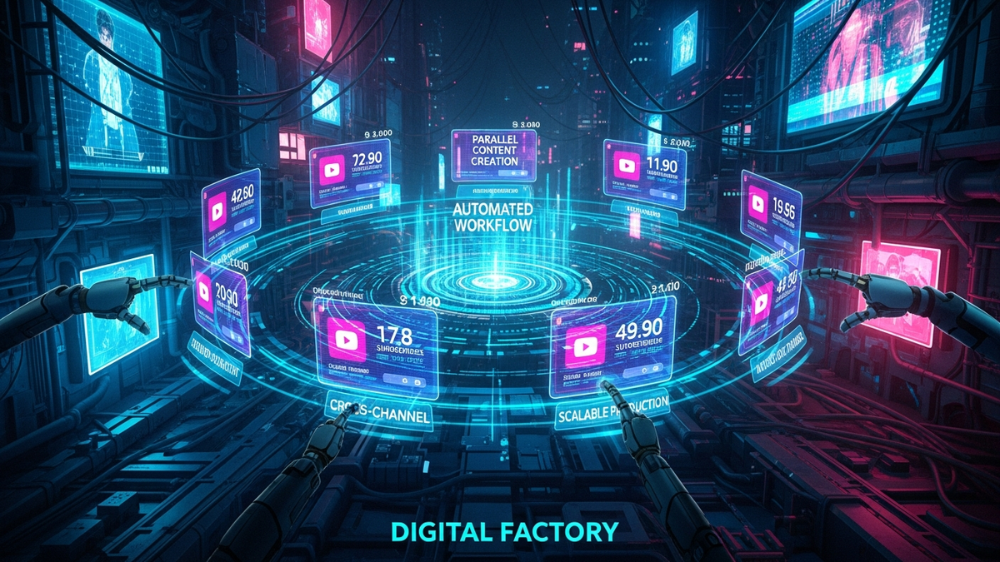

Alright, let's get one thing straight. You want to run 10 YouTube channels at once? Forget being a "creator." You need to start thinking like a system architect and a paranoid sysadmin. This isn't about passion projects; it's about building a digital assembly line. It's about engineering a machine that outputs content efficiently, securely, and at scale.
For 15 years, I've built and defended corporate networks. The principles are identical. Your "factory" will have assets (videos), a production line (workflow), and security vulnerabilities (hackers, rogue employees, your own mistakes). My job is to give you the blueprint to build it right the first time, so you're not rebuilding from ashes after a catastrophic failure. Forget the guru nonsense about "finding your voice." We're here to build a system. Let's get to work.
Before you even think about a channel name or a thumbnail design, you build the damn foundation. In IT, we call this provisioning. You don't build a skyscraper on a patch of dirt. You pour a concrete and steel foundation that can withstand an earthquake. Your 10-channel operation is that skyscraper, and a hacker or a simple mistake is the earthquake.
First, security. This is non-negotiable. Every single one of your 10 channels gets its own unique Google Account. Do not link them. Each account gets a unique, 20+ character password generated by a password manager like Bitwarden or 1Password. If you're writing passwords down on a sticky note, just quit now. For two-factor authentication (2FA), SMS is garbage and easily intercepted. You will buy and use hardware security keys like YubiKeys. One for your main machine, and a backup in a safe. This key is the physical key to your digital kingdom; treat it that way.
Next, email management. Each channel's Google Account needs a dedicated, secure email address. I recommend setting this up through a paid service like Google Workspace. This lets you create addresses like `channel1@yourdomain.com`, `channel2@yourdomain.com`, and so on. This isn't just for looks; it's for containment. A firewall is like a bouncer at a club, deciding who gets in. Segregating email accounts is like having 10 different clubs with 10 different bouncers. If a phishing attack compromises one email, the other nine are isolated and unaware. This simple step turns a potential factory-wide catastrophe into a manageable, single-channel incident.
Finally, you need a sterile environment for operations. Designate one machine—a "management terminal"—for nothing but uploading videos and managing your channels. This machine should be clean, with minimal software installed. You don't use it for personal browsing, downloading torrents, or checking sketchy emails. Every piece of random software you install is a potential backdoor. By keeping your management environment isolated, you drastically reduce your attack surface. It's the digital equivalent of a cleanroom in a manufacturing plant; you keep contaminants out to protect the final product.
💡 Expert IT Tip: Use your central email service (like Google Workspace or Fastmail) to set up server-side forwarding rules. Create a central "command" inbox, for example `notifications@yourdomain.com`. Then, create rules for each of the 10 channel inboxes to automatically forward all YouTube notifications (comments, strikes, etc.) to this command inbox and apply a specific label (e.g., 'Channel-TechReviews', 'Channel-Cooking'). This lets you monitor all 10 channels from a single, secure dashboard without constantly logging in and out, which is both a security risk and a massive time-waster.
Your "factory" is going to produce an insane amount of data: raw footage, audio files, graphics, project files, final renders. Storing this on a bunch of external hard drives is a recipe for disaster. It's like trying to run a warehouse by stuffing inventory into random closets. You need a centralized, organized, and redundant system. This is your Digital Asset Management (DAM) system, even if it's a simple one.
Your single source of truth will be a robust cloud storage solution. For this scale, a consumer-grade Dropbox account won't cut it. You need a business-tier service like Google Drive for Workspace or Dropbox Business. These offer better admin controls, more storage, and superior team management features. The monthly cost is a non-negotiable operational expense. The alternative is data loss, which will cost you exponentially more in lost time and revenue. If you have the technical skill, a Network Attached Storage (NAS) device from Synology or QNAP, configured to back up nightly to a cloud service like Backblaze B2, gives you the best of both worlds: fast local access and off-site disaster recovery.
The most critical piece of this is the folder structure. It must be identical for every single channel. You create a master template and duplicate it. A bulletproof structure looks something like this:
/PRODUCTION_MASTER/
/CHANNEL_01_TechReviews/
/VID_001_NewLaptopReview/
01_RAW_FOOTAGE02_AUDIO03_GRAPHICS_BROLL04_SCRIPTS_NOTES05_PROJECT_FILES06_FINAL_RENDERS/VID_002_...//CHANNEL_02_Cooking/Finally, enforce a strict file naming convention. This is what separates amateurs from professionals. A file named `final_video_new.mp4` is useless. A proper name contains all the metadata you need to identify it at a glance: 2023-10-28_TechReviews_NewLaptopReview_v1_1080p.mp4. This format (`YYYY-MM-DD_Channel_VideoTopic_Version_Resolution.ext`) makes files automatically sort chronologically and makes searching for assets trivial. When you have thousands of files across 10 channels, a logical naming convention is the only thing that will save your sanity and prevent you from using the wrong B-roll or publishing an old version of a video.
Creativity doesn't scale. Systems do. You cannot rely on spontaneous inspiration to fuel 10 channels. You must build an assembly line—a standardized process that takes a video from a raw idea to a scheduled upload with ruthless efficiency. This means documenting everything and turning your production process into a checklist-driven machine.
Your command center for this assembly line is a project management tool. Don't use a spreadsheet. Use something built for this, like Trello, Asana, or ClickUp. The specific tool matters less than how you use it. You will create a master "Video Production Template" board. This board will have columns representing each stage of the process: `Idea Backlog`, `Researching`, `Scripting`, `Ready to Film`, `Editing`, `Graphics/Thumbnail`, `Review/QC`, `Ready to Upload`, and `Published`. Each video is a "card" that moves from left to right. For your 10-channel factory, you simply duplicate this template board for each channel. This gives you a bird's-eye view of your entire production pipeline at all times.
Turn your scripts into professional videos automatically. Use code PAVEL20 for 20% OFF!
START CREATING WITH PICTORYInside each card (representing a single video), you'll use a checklist template. This is your Standard Operating Procedure (SOP). It breaks down each stage into granular, non-negotiable tasks. For the 'Ready to Upload' stage, the checklist might include:
The final piece of standardization is asset templates. Your editors should not be starting from a blank timeline in Premiere Pro or Final Cut. You will create a master project template for each channel that already includes the branded intro, outro, lower-third graphics, color correction presets, and audio processing chains. Similarly, you'll have Canva or Photoshop templates for thumbnails with the channel's fonts, logos, and color palettes already in place. This dramatically speeds up production and, more importantly, ensures brand consistency across hundreds of videos and 10 different channels. Your factory needs to produce a consistent product, and templates are how you enforce that.
💡 Expert IT Tip: Create a "Digital SOP Library" in a tool like Notion or even a well-organized Google Doc. This isn't just for checklists. For every key process, create a short screen recording using a tool like Loom. Have a 2-minute video showing exactly how to export a video with the correct settings, a 1-minute video on how to use your thumbnail template, and a 3-minute video on the final YouTube upload process. When you hire a new editor or assistant, you don't spend hours training them. You send them a link to the library. This is how you scale your human resources.
At this scale, manual labor is your biggest bottleneck and your primary source of error. You need to automate every repetitive task you possibly can. A sysadmin's goal is to automate themselves out of a job. Your goal as a factory manager should be the same. You should be focused on strategy, not on clicking the same five buttons a hundred times a day.
Your first set of robots are integration platforms like Zapier or Make.com. These are the digital duct tape that connects all your different software tools without you needing to write a single line of code. For example, you can build an automation "zap" that triggers when you move a video card to the "Published" column in Trello. This zap can automatically post a link to the new video in your Discord community, share it on your Twitter feed, and create a task for your assistant to "Create 3 Short-Form Clips" from the video a week later. You can connect your YouTube channel to your email marketing service, automatically adding a new video to your next newsletter draft. Each automation saves you 5-10 minutes. Across 10 channels, that's thousands of hours saved per year.
Next, you need to invest in professional-grade channel management tools. Free browser plugins are fine for one channel, but for a factory, you need the enterprise-tier versions of tools like TubeBuddy or VidIQ. These paid tiers unlock bulk processing features that are essential for managing 10 channels. Imagine you need to update a disclaimer or a promotional link in the description of every video you've ever published. Doing this manually across 10 channels could take weeks. With a bulk Find and Replace tool, you can do it across thousands of videos in minutes. These tools also allow you to create upload templates, bulk-apply end screen templates, and perform A/B testing on thumbnails at a scale that is impossible to manage manually.
For those with a bit more technical courage, the final frontier is the YouTube Data API. This is the direct programmatic interface to YouTube. You don't need to be a Google-level developer to use it. With a simple Python script, you can build a custom dashboard that pulls key analytics from all 10 of your channels into a single spreadsheet every morning. You could write a script to automatically scan comments for spam keywords and delete them, or one that finds every video that doesn't have a pinned comment and flags it for you. This is the ultimate form of leverage, allowing you to manage your entire operation with a precision and speed that your competitors, who are manually clicking through YouTube Studio, can only dream of.
You cannot run a 10-channel factory alone. You will need to hire help—editors, scriptwriters, thumbnail designers, virtual assistants. But people are the biggest security vulnerability in any system. Your job is to build a framework that allows them to do their work effectively without giving them the keys to the entire kingdom. This is done by implementing the "Principle of Least Privilege," a core concept in cybersecurity.
The Principle of Least Privilege means a user should only have access to the specific data and tools they need to do their job, and nothing more. Your video editor does not need the password to the channel's Google account. They don't need to be a "Manager" on the channel. YouTube has built-in user roles for this very reason. You will invite your editor's own Google account to be an "Editor" on your YouTube channel. This allows them to upload videos, edit titles and descriptions, and see analytics, but it prevents them from doing catastrophic damage like deleting the channel or changing ownership. A thumbnail designer might not even need YouTube access at all; they just need access to a specific folder in your cloud storage where they can upload their finished graphics.
Never, under any circumstances, share the primary login credentials for any of your channel's Google Accounts. Giving out your password is like giving a freelancer a master key that opens your office, your safe, and your home. Instead, you use the built-in sharing and permission systems of your tools. For your cloud storage, you don't share the entire `PRODUCTION_MASTER` folder. You share a specific `VID_001_NewLaptopReview` folder with the editor working on that project. In your project management tool, you assign them only to the cards relevant to their work. This compartmentalization limits the blast radius if a freelancer's account gets compromised or if they turn out to be untrustworthy.
Finally, you must have rigid onboarding and offboarding procedures. This should be a written checklist. Onboarding: Create user account, grant access to specific Google Drive folders, assign to Trello boards, invite to the "Editor" role on YouTube. Offboarding is even more critical. The moment a contract ends, you execute the offboarding checklist immediately: Revoke access from all cloud folders, remove from the project management tool, and, most importantly, remove their user role from the YouTube channel. A disgruntled ex-freelancer with lingering access is one of the most common and devastating ways channels get vandalized or deleted. A formal process removes human error and emotion from this critical security step.
Building a 10-channel YouTube factory has very little to do with being a YouTuber and everything to do with being a systems engineer. It's not about chasing viral trends or having the most charismatic personality. It's about building a robust, secure, and efficient machine. It's about understanding that the real work is done before you ever hit "record."
You've laid a secure foundation with segregated accounts and hardware 2FA. You've built a centralized digital warehouse for your assets with a logical structure. You've engineered an assembly line with SOPs and templates to ensure consistency and quality. You've hired a robot workforce through automation and deployed a human firewall with strict access controls. This is the blueprint. The system is the star, not you. Now, go execute.
Don't wait for the headlines. Our Private Telegram Channel delivers real-time AI security updates and digital wealth strategies before they go viral. Stay protected. Stay ahead.
⚡ JOIN THE 1% NOWNo sign-up required. Instantly check risks, analyze AI text, or calculate your digital finances.